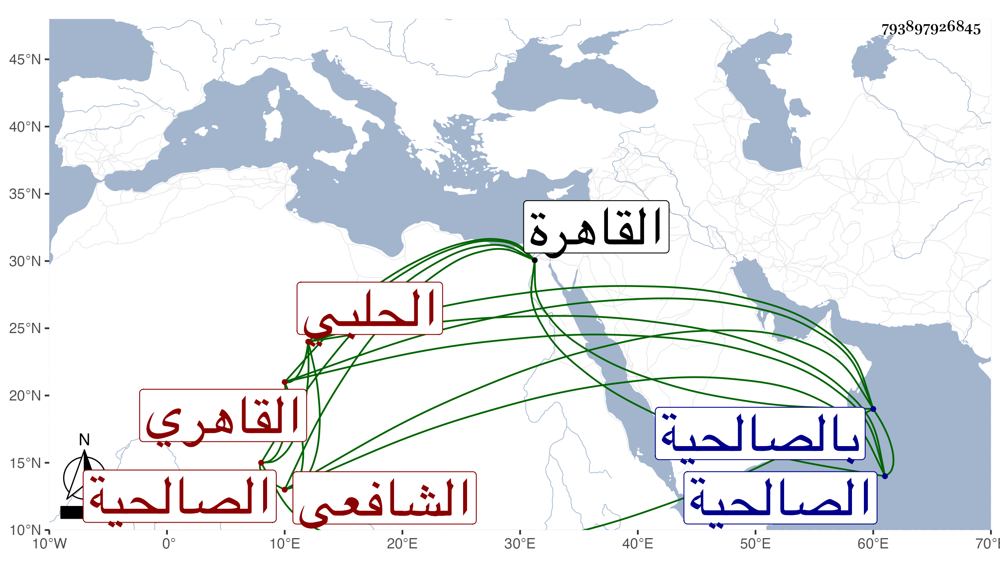

0902Sakhawi.DawLamic.ITO20230111-ara1.EIS1600.793897926845
Biography ID: 793897926845
552
محمد بن علي بن محمد بن محمود بن إسمعيل بن المنتخب المحب بن العلاء ابن الشمس الحلبي ثم القاهري الشافعي الماضي أبوه والآتي جده ويعرف بالألواحي لعملها . ولد في سنة ثمانين وسبعمائة أو بعدها تقريبا بالقاهرة ونشأ فحفظ القرآن والعمدة والمنهاجين وألفية ابن ملك وعرضها على أئمة عصره واجتهد أبوه في شأنه وحرص عليه أشد الحرص حتى كان يسمع عليه محافيظه داخل الحمام ويقال أنه تناول حب البلادر . واشتغل يسيرا وسمع على ابن أبي المجد والتنوخي والعراقي والهيثمي والحلاوي ، وأجاز له خلق باستدعاء شيخنا ، وتكسب بالشهادة في الصالحية وغيرها ، وحدث بالصحيح وغيره مرارا وسمع عليه الفضلاء أخذت عنه أشياء ، وكان خيرا ساكنا محبا في السماع وأقعد قبل موته وتعلل وضعف بصره وقتا فكان الطلبة يقصدونه في منزله بالصالحية . مات في ليلة الأربعاء خامس جمادى الثانية سنة ثلاث وسبعين ودفن من الغد رحمه الله .
